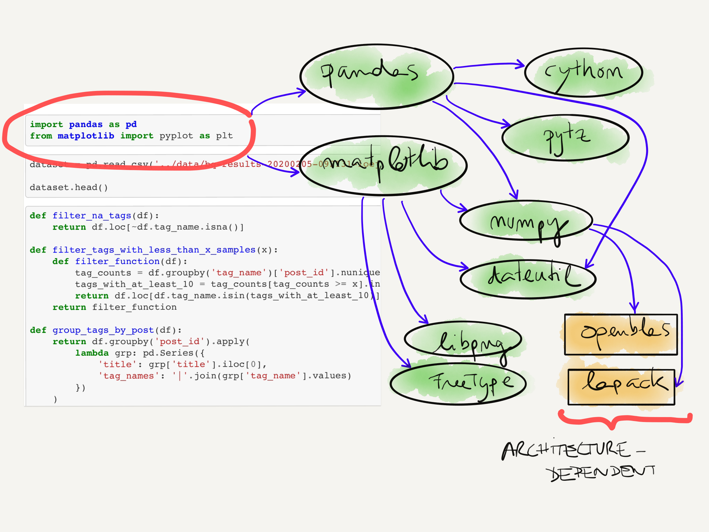
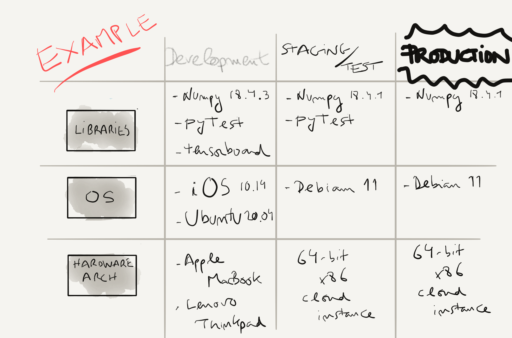

Why should we care?
How we typically think of our work

Data and source goes in: artefacts come out
Even the simplest code relies on many other things…
And needs to run on different environments
How do we make sure we can port and reproduce the same results?
How we should think of our work
Is this an overkill? Are we overthinking it?
Python dependency management
Many snakes…
Many different pythons co-exist in a host… $PATH determines which one we run
How does Python imports libraries?
import numpy
- built-in packages (import sys; sys.builtin_module_names)
- Current directory
- Rest of sys.path (which includes {python_root}/site-packages
Tip: Use help(‘modules’) to find all installed packages
Ref: Python 3 doc: the module search path and Chris Yeh’s guide to import statements
What does pip install do?
- Looks for source or binary distribution in PyPi Index
- Discovers its dependencies
- Installs all packages (target + dependencies)
Warning
All third-party packages are installed in (“copied into”) the same folder {python_root}/site-packages!
Example: numpy

Pip hell
Does anything like this sound familiar?
> pip install google-cloud-storage==1.13.2
ERROR: google-cloud-storage 1.13.2 has requirement XYZ
but you'll have google-cloud-core 0.28.1 which is incompatible.
Or this:
> pip install coolest-package
... bla bla ...
clang: error: unsupported option '-fopenmp'
error: command 'gcc' failed with exit status 1
Pip hell (2)
{kind=link}
We need a tool to:
- isolate dependencies across projects
- properly resolve transitive dependencies
- enable porting environment specifications from one host to another
Available tools
Env Management via Conda
What is conda?
- A package manager (like pip) which can manage non-python stuff
- An environment manager (like venv) which can also manage different Python versions
- A proper dependency resolver (SAT checks)
- A disk-space saver (w.r.t venv’s)
Quick foreplay
conda create -n vintage_env python=2.7
conda activate vintage_env
# now we are in a vintage 2.7 env
# install your favorite package, for example:
conda install pandas
# inspect the output
# run the python interpreter
python # which version is it?
conda deactivate
# back to the base
You can port conda environments
conda env export --no-builds > env.yml
# I would recommend to manually edit `env.yml`:
# 1) remove any possible native libraries (gloups!)
# 2) and the `prefix` entry
# now let's create an environment from those specs (will fail!)
conda env create -f env.yml
# clean-up:
conda env remove -n env_name
Warning
Envs ported like this are not fully reproducible: different builds + different native libraries –> different output
You can manage non-python dependencies
conda install git
…but you may need to use esoteric channels:
conda config --add channels new_channel
which you can find by searching in Anaconda.org.
You can continue using pip… with care
- use it only in dedicated environments (not base)
- install all packages available in conda channels first, then use pip
- conda will be unaware of dependencies of stuff installed via pip
More info: Using Pip in a Conda Environment
conda doesn’t know how to manage pip dependencies ==> no proper dependency resolution for pip-installed packages
conda envs limitations
- Conda packages are not always bleeding-edge (ex: tensorflow 1.13 up till Feb 2020)
- You still need to manually manage different dev and pro environment specs
- Yaml specs are not cross-platform portable
- Using pip can get you in trouble
Quizz
- Where is conda installing your packages?
- What do you think which python returns from within a conda env?
- What do you think echo $PATH returns from within a conda env?
Quizz (solution)
- Where is conda installing your packages?
> which conda
/Users/arnau.tibau/miniconda3/condabin/conda
# my conda root is at `/Users/arnau.tibau/miniconda3`.
# the environments are in the `envs` folder
> ls /Users/arnau.tibau/miniconda3/envs/
# for a given environment, the Python packages are in
# their corresponding site-packages:
> ls /path/to/envs/ml_in_prod/lib/python3.7/site-packages/
Quizz (solution) (2)
- What do you think which python returns from within a conda env?
(ml_in_prod) > which python
/Users/arnau.tibau/miniconda3/envs/ml_in_prod/bin/python
Quizz (solution) (3)
- What do you think echo $PATH returns from within a conda env?
# $PATH's first element is the conda env bin folder
> echo $PATH
/Users/arnau.tibau/miniconda3/envs/ml_in_prod/bin: ....
Practice time!
- Create a new conda env for Python 3.7.3 named practice_env
- Install Flask 1.1.1, Tensorflow 2.1, pandas 1.0, scikit-learn 0.22.1
- Write a test_env.py that verifies import correctness
- Export the environment and send it to the person on your right
- Create a new environment from the environment sent to you by the person to your left
BONUS: Create a jupyter notebook kernel linked to this new environment
Practice time (solution)
- Create a new conda env for Python 3.7.3 named practice_env
- Install Flask 1.1.1, Tensorflow 2.1, pandas 1.0, scikit-learn 0.22.1
conda create -n practice_env Python=3.7.3
conda activate practice_env
# Tensorflow 2.1 is not available for macOS in any conda channel,
# so we skip it for now
conda install flask=1.1.1 pandas=1.0 scikit-learn=0.22.1
# We install Tensorflow 2.1 from pip
pip install tensorflow==2.1
Practice time (solution) (2)
- Write a test_env.py that verifies import correctness
1 2 3 4 5 6 7 8 9 10 11 12 13 14 | # Example solution for env_test.py
# (only testing `pandas`)
def test_pandas():
import pandas as pd
pd.DataFrame({'a': [1]})
tests = {'pandas': test_pandas}
for name, test in tests.items():
try:
test()
except Exception as e:
print(f"Error! Tests failed for {name}: {e}")
else:
print(f"OK: Tests passed for {name}")
|
Practice time (solution) (3)
- Export the environment
conda env export > practice_env.yml
- Create a new environment from the environment sent to you
# note we give it a different name so as to not override our own
conda env create -f practice_env.yml -n other_practice_env
Practice time (solution) (4)
BONUS: Create a jupyter kernel linked to practice_env
conda activate practice_env
conda install ipykernel
ipython kernel install --user --name=practice_env